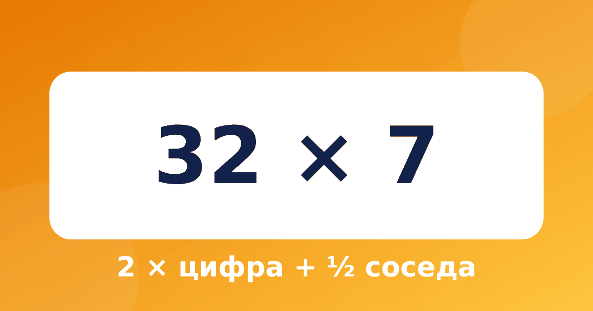

Как умножить на 7: удвоить цифру и прибавить половину соседа

Семёрка считается самой неудобной цифрой таблицы умножения. Система Трахтенберга предлагает для неё правило, которое состоит из трёх простых действий. Оно длиннее, чем для 11 или 5, поэтому его стоит учить после них. Ниже умножение на 7 в уме по шагам: так вы поймёте, как умножить число на 7, а умножение на 7 по Трахтенбергу превратится из фокуса в понятное правило.
Правило
Ставим нулик слева и идём справа налево. Для каждой цифры ответ равен сумме трёх слагаемых:
- удвоенная цифра;
- половина соседа (без остатка);
- плюс 5, если сама цифра нечётная.
Сосед стоит справа, у последней цифры он невидимый нулик. Если получилось больше 9, пишем последнюю цифру, а десяток запоминаем для следующего шага.
Пример: 32 × 7
Число с нуликами: 0 3 2 0.
- Цифра 2, сосед 0: 4 (2 × 2). Пишем 4.
- Цифра 3, сосед 2: 6 + 1 + 5 = 12 (2 × 3, половина соседа 2, нечётная цифра, +5). Пишем 2, 1 запоминаем.
- Нулик слева, сосед 3: 1 + 1 = 2 (половина соседа 3, перенос 1). Пишем 2.
Ответ 224.
Пример с переносами: 846 × 7
- Цифра 6, сосед 0: 12 (2 × 6). Пишем 2, 1 запоминаем.
- Цифра 4, сосед 6: 8 + 3 + 1 = 12 (2 × 4, половина соседа 6, перенос 1). Пишем 2, 1 запоминаем.
- Цифра 8, сосед 4: 16 + 2 + 1 = 19 (2 × 8, половина соседа 4, перенос 1). Пишем 9, 1 запоминаем.
- Нулик слева, сосед 8: 4 + 1 = 5 (половина соседа 8, перенос 1). Пишем 5.
Ответ 5922.
Почему это работает
Потому что 7 = 5 + 2. Число × 7 = число × 5 + число × 2. Удвоенная цифра появляется от умножения на 2, а половина соседа и пятёрка для нечётных — от умножения на 5, как мы разбирали в статье про умножение на 5 и на 6. Проверьте: 32 × 5 = 160, 32 × 2 = 64, вместе 224. Если ребёнок один раз увидел такую проверку, правило перестаёт казаться магическим.
Тренируемся
Закройте ответы, посчитайте по правилу и сверьтесь.
- 12 × 7 = 84
- 25 × 7 = 175
- 48 × 7 = 336
- 63 × 7 = 441
- 147 × 7 = 1029
- 205 × 7 = 1435
Типичные ошибки
- Забывают половину соседа: удваивают цифру и сразу прибавляют единицу.
- Прибавляют 5 для чётной цифры или забывают для нечётной.
- Берут половину цифры, а не её соседа.
- Путают порядок: считают слева направо и теряют перенос.
Когда лучше считать иначе
Честно: для небольших примеров таблицу умножения на 7 знать быстрее. Правило Трахтенберга выигрывает на многозначных числах, где столбик занимает много места. Поэтому прежде чем учить его, убедитесь, что ребёнок знает таблицу умножения на 7 и на 8 хотя бы в основном, а приём подавайте как способ проверки и как интересное дополнение.
Вопросы и ответы
Какое правило учить первым: для 7 или для 11?
Лучше начинать с 11 и 5, они короче. Правило для 7 состоит из трёх частей и подходит тем, кто уже уверенно считает половину числа и удвоение.
Сколько времени нужно, чтобы освоить умножение на 7?
Обычно хватает недели занятий по 5–10 минут: по 5–6 примеров в день. Если ребёнок путается, вернитесь к правилу для 5, потому что половина соседа и +5 для нечётной цифры — общие.
Как проверить результат?
Умножьте число на 5 и на 2 и сложьте. Для 32 это 160 + 64 = 224. Это же объяснение помогает понять, откуда берётся правило.
Как не перегрузить ребёнка
Правило для 7 состоит из трёх частей, и это нормально, что сначала оно кажется громоздким. Помогает порядок: сначала ребёнок называет цифру и соседа, потом удваивает цифру, потом находит половину соседа, потом смотрит на чётность и только в конце складывает. Каждый шаг можно проговаривать вслух. Через 10–15 примеров слова становятся не нужны, и правило начинает работать само.
Не требуйте скорости в первую неделю. Если ребёнок ошибается, не повторяйте правило целиком, а спросите, на каком шаге он запутался. Чаще всего ошибка прячется в половине соседа или в забытой пятёрке. Когда причина найдена, примеров нужно всего пять-шесть, чтобы закрепить исправление.
Хорошо работает игра «найди ошибку»: взрослый специально считает неверно, а ребёнок ищет, где. Так он учится проверять правило, а не только применять его. Попробуйте решить три-четыре примера, в одном из которых ответ неправильный, и пусть ребёнок найдёт его по частям.
Что делать дальше
Если приём пошёл, закрепляйте его в тренажёре «Быстрый счёт»: там есть пошаговые задания и повторения, а ошибочные примеры возвращаются через 1, 3, 7 и 14 дней. Занимайтесь недолго, но регулярно.